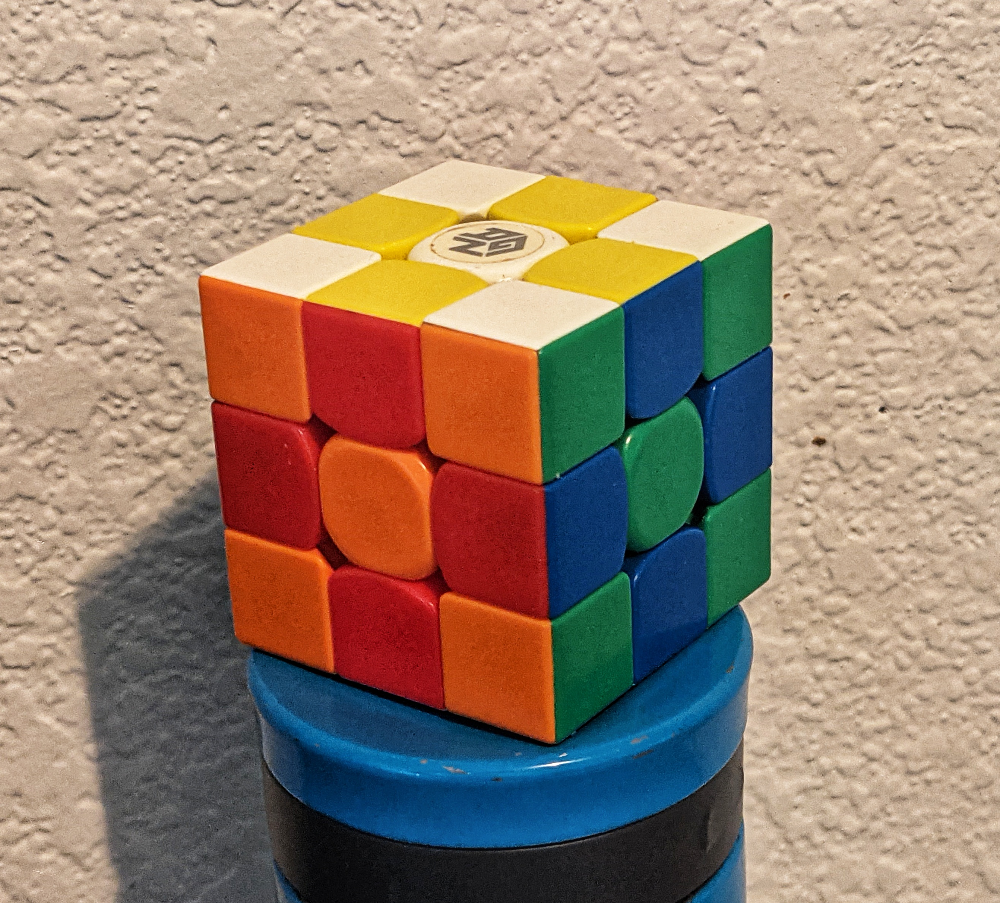

Hobbies¶
I consider myself to be a person with a relatively wide range of hobbies. However, some of my hobbies are indeed somewhat niche. My hobbies include:
Computer & Programming¶
Important
Now I mainly use Python, and I rarely use Pascal/C++/C# that I learned before. I also know HTML/CSS and a little Javascript, otherwise I wouldn't have been able to write this site.
If you consider LaTeX a programming language, I'm a heavy LaTeX user too. See my published book on how to use LaTeX (Github repo: wklchris/Note-by-LaTeX).
Yes, that's right, of course. Programming has been my biggest passion for a long time, and I'm happy to see that. Here are my representative Github projects, you can also access my Github home page via the Github icon in the top right corner of the page (thanks lepture/github-cards for repo cards rendering):


Around 2000 (at the age of about 6), I was introduced to computers. I was very fortunate to be exposed to and interested in computers at a very young age, especially against the backdrop of the slow penetration of computers in China at that time.
The reason is that my father was a computer enthusiast and purchased a personal computer from the family in the Windows 95 era. I can still remember that the first graphic game I got to play on the Windows 98 computer in my home was Virtua Cop (Chinese name: "VR特警"), a first-person shooter game released by Sega in 1994.
In 2004, I started learning programming. Pascal was the first language I came across in my life, learning it in a Delphi environment.
Around 2008, I went to Wuhan, Hubei to participate in the provincial Olympiad in Informatics, but I only got a city-level third prize.
During 2012-2014, I enrolled Visual Basic, C++ courses in Tongji. I also self-learned data structures and algorithms during that time.
Around 2015, I learned about Github and register an account.
I began to share my LaTeX learning notes on Github (wklchris/Note-by-LaTeX), and compiled them into a book and publish them in 2020.
I built my personal website at that time and learned HTML/CSS/Javascript by building the website.
I self-learned Python 3 and quickly fell in love with its simplicity and ease of use.
In 2018, I took advanced algorithm courses and a D3.js visualization course.
Go (Weiqi)¶
Important
I was certified of amateur 1 Dan many years ago. Over the years, I just played against others and did not continue to study systematically and deeply. I don't know whether my Go level has improved.
I started learning Go when I was in elementary school. Despite not having studied for a particularly long time, I finished my studies with an amateur 1 Dan certificate and won the sixth place in the city's junior Go competition.
The picture below shows the first Go joseki (定式) I learned when I was young. This joseki is now almost obsolete due to the new theory proposed by AlphaGo and other Go AIs.

When I was learning Go, the strongest player in the world is probably Lee Chang-ho (李昌镐, 1975--), but my favorite is the power player Sakata Eio (坂田荣男, 1920--2010). This is because my style of play has always been conservative and steady; I have purchased many of his games in the hope of breaking through. Mr. Sakata fought in the Go world until he was 80 years old and could be said to be a reflection of the fighting spirit of Go. I was very sad when he passed away in 2010.
Among the new generation of Go players, I now like Gu Zihao (辜梓豪, 1998--), perhaps the most aggressive and powerful Chinese Go player of the new generation. By the way, he was also born in Hubei, so I have a sense of hometown affinity.
In my spare time, I still play Go on KGS Go (CGoban) and Foxwq (野狐围棋) with other online players. In 2021, I was rated at 3~4 Dan level (we all understand that these platforms tend to rate users' levels on the high side).
Photography¶
Important
I consider myself a landscape photography amateur. I used to have my own camera (Nikon P7100), but now I can only shoot with my cellphone here. The good thing is that for ordinary landscapes, today's cellphones are capable enough to shoot.
My father has always been a heavy camera user, and my mother has always been very keen on appearing in photographs as the main character. As a result, my photography hobby has been influenced by my family to a greater or lesser extent. However, my father always shot portraits, while I prefer to shoot landscapes.
It wasn't until I was pursuing my BS degree in Shanghai that I actually had my first camera by my side that was always with me. It is a Nikon Coolpix P7100, a 10.1 million pixel digital camera with a fixed 35mm-equivalent f/2.8-5.6 28-200mm lens.
Later, my father got a standard DSLR, Nikon D5200, but I didn't play with that camera much. After around 7 years, he updated it to Nikon D780. In fact I still think the mirrorless Nikon Z 6Ⅱ is slightly better in focus and future lenses/firmware supports, but for him DSLR's longer battery life and cheaper large-aperture lens options are much more important.
I didn't bring my camera with me oversea, so I can only show you some photos taken by my cellphones (shot on Google Pixel 5A, image pixels are compressed):


Tone Tuning (Virtual Singer)¶
Important
I am a skilled tone tuner of the virtual singer software UTAU. I have heard of Synthesizer V and will probably buy it and try in the future.
Many people may not understand what kind of hobby this is. Simply put, it's about making virtual singers' voices match the beat, pitch, and emotion of a song so that they can sing it.
The most famous virtual singer in the world is Hatsune Miku (初音ミク). If you haven't heard her name, I'm sure you've heard her coverf of Ievan Polkka (Video link). Here is a portrait of Hatsune Miku from the official Crypton website:

Virtual singers only have the sound of individual words or syllables read aloud (without intonation) in their voice bank, so to get them to sing a full song, a technician (i.e., a tuner) must be available to work on the pitch and beat of their pronunciation. In addition to these basic adjustments, to make the final song sound natural, beautiful, and close to a real person singing it, a good tone tuner will also deal with:
Vocal emotion,
Vibrato,
Glissando,
Ornamentation,
Singer falsetto, and many other things.
The voice software (synthesizer) behind Miku is Vocaloid, initially made by Yamaha in 2004. However, Vocaloid has not been called a success until the introduction of Hatsune Miku in 2007. After then, many virtual singers have been released for free (or sold commercially), and they are available for different synthesizers. However, I didn't know much about Vocaloid because its price is too high for amateurs like me.
In the 2010s, the most famous free synthesizer is UTAU and that is exactly the software I am familiar with. I started my tuner hobby in 2014, right after the release of virtual singer Ge Ping. I am grateful for his generosity on the virtual singer, which allows me to explore the fun of music in this way.
Here are some samples tuned by me, covered by the virtual singer Ge Ping:
One Night in Beijing (北京一夜): The falsetto vocal effect is simulated in the chorus. I tuned this in 2015.
Like Smoke (如烟): Gentle and lyrical singing style. I tuned this in 2016.
Note
In China, Ge Ping (葛平, 1960--), who was famous for being the main voice actor of Chinese animation 3000 Whys of Blue Cat (蓝猫淘气三千问), is an important figure who can't be bypassed and who drives the development of Chinese virtual singers.
Initially, a video of his interview has been spoofed by netizens for a long time. Netizens took pleasure in making fun of his standard pronunciation and interview stories, and sometimes used the video as music material. Instead of getting angry after finding out, Ge Ping said he had always regretted not becoming a singer as well, and wanted to learn new trends from young people and contribute his voice to help fans of virtual singers realize their dreams.
In 2013, Ge Ping recorded his own voice in the studio as a sound source of a virtual singer (UTAU compatible), and released it publicly (Ge Ping Voice Release). He voluntarily gave up his commercial rights and made the virtual singer available to everyone at no cost for tone tuning and music creation. This is also the highest quality Chinese virtual singer voicebank in a long time. Here is the portrait of the virtual singer Ge Ping from UTAU China group (designed by 十月鬼).

After 2019, the strongest synthesizer probably became the paid software Synthesizer V, which also has many Chinese voicebank under it, such as Xingchen (星尘), Chiyu (赤羽), and Cangqiong (苍穹). You can visit the albums of this generation of virtual songstresses (Xingchen/Cangqiong/Shian's First Album - Jungle Rules, in Chinese) to try them out, and you will find that their singing is almost indistinguishable from that of real people.
The level of software technology is extremely powerful, allowing tuners to make virtual singers' singing comparable to real vocal many times easier than it was in the early days of the Vocaloid/UTAU era. I haven't had a chance to try it out yet, but will likely acquire it in the future.
Music Listening¶
Important
The vast majority of the songs I listen to are in Mandarin, and I had a couple of years where I really liked English songs. I also listen to some Japanese songs from ACG culture, even though I don't speak Japanese.
I also listen to some concert music, mainly piano music from Bandari. But I have no knowledge of classical music, and most of the pieces I listen to come from friends' recommendations or internet trends.
For Chinese people born in the 90s who listen to songs, Jay Chou (周杰伦, 1979--) is a mountain that cannot be bypassed. Yes, the singer I've heard the most is definitely him. Although I'm not a fan of any singer, if I had to say one of my favorite singers, it would be him. I like his Quiet (安静), Broken Strings (断了的弦), Sunny Day (晴天), Excuses (借口), Stranded (搁浅), Nocturne (夜曲), Maple (枫), Step Back (退后), Rainbow (彩虹)... just too many to count.
Many people would say, "Hey, that's cheating! Because saying your favorite singer is Jay is an always correct but never uninteresting answer." Wow, you're right. If I were to count backwards, it would be Eason Chan (陈奕迅, 1974--) and Yoga Lin (林宥嘉, 1987--). I like Eason Chan's King of Karaoke (K歌之王), Your Backpack (你的背包) and Don't Talk (不要说话), and Yoga Lin's Backdrop (背影), Lie (说谎) and Want to be Free (想自由).
I don't listen to many songs by female singers, but if I were to choose the favorite one, it would probably be Angela Zhang (张韶涵, 1982--). She was the first female singer I saw in a music video, at which time I was in elementary school. She released her first and second albums in 2004, and the songs Fable (寓言), Lost Beauty (遗失的美好), Aurora (欧若拉), Happy Worship (快乐崇拜), and Sun in the Hand (手心的太阳) were all highly popular at the time. To make up also three singers, I will list Fish Leong (梁静茹, 1978--) and Karen Mok (莫文蔚, 1970--). Although Leong is known for singing gentle, slow-tempo love songs like Breathing Pain (会呼吸的痛) and Quiet Summer (宁夏), I like her fast-paced Swallowtail Butterfly (燕尾蝶) best. Karen Mok's hits are also very numerous, such as Cloudy Day (阴天), Fruits of Summer (盛夏的果实) and Suddenly (忽然之间), but I prefer her He Doesn't Love Me (他不爱我) and If I Don't Have You (如果没有你).
In addition to solo artists, I have listened to some groups, mainly Mayday (五月天). Their Stubborn (倔强), Angel (天使) and Suddenly Miss You (突然好向你) are very famous songs, and I like also their Embrace (拥抱), Tenderness (温柔) and Cang Jie (仓颉). The first music CD I bought was also from a group, which is Forever from S.H.E.. The tracks I listened to the most in the CD were Superstar and Persian Cat (波斯猫). But apart from these two songs with He Still Doesn't Understand (他还是不懂) and Lovers Not Yet (恋人未满), I haven't listened to too many of their songs.
For English songs, I started with Avril Lavigne (1984--), since she is the first poular singer I noticed. I had heard many English songs before her, but the distribution of singers was very fragmented (and in fact still is for now). Here are some of the artists I've heard at least two songs from (in alphabetical order, bolded ones are the artists I have really liked for a period of time):
Avril Lavigne: Innocence, Skater Boy, and When You're Gone
Bruno Mars: Grenade and The Lazy Song
Coldplay: Something Just like This, Viva la Vida, and Yellow
Fall Out Boy: Centuries, Imortals, and My Songs Know What You Did in the Dark
Groove Coverage: Far Away from Home and She
Image Dragons: Demons and Radioactive
John Legend: All of Me and Someday
Kelly Clarkson: Catch My Breath, Mr. Know It All, and Stronger
Lady Gaga: Bad Romance and Poker Face
Linkin Park: Crawling, Leave out All the Rest, Lost in the Echo, New Divide, Numb, and Skin to Bone
Maroon 5: Animals, Maps, Moves Like Jagger, Payphone, She Will Be Loved, Sugar, and This Love
One Republic: Apologize and Counting Stars
Owl City: Fireflies and Good Time
Shayne Ward: Breathless, I Cry, No Promises, and Until You
Taylor Swift: 22, Back To December, i knew you were trouble, and You Belong With Me
The Fray: Never Say Never and Over My Head (Cable Car)
Westlife: My Love and Seasons In The Sun
For Japanese songs, most of the Japanese songs I've heard are from the Japanese ACG (Anime, Comics and Games) culture scene:
CLANNAD: 小さな手のひら (小小的手心) and 時を刻む唄 (铭刻时间的歌)
とある科学の超電磁砲 (某科学的超电磁炮): Only My Railgun and Future Gazer
秒速5センチメートル (秒速五厘米): One More Time One More Chance
偽物語 (伪物语): 白金ディスコ (白金 Disco)
鋼の錬金術師 (钢之炼金术士): 嘘
罪惡王冠 (罪恶王冠): エウテルペ (Euterpe), βios, and Release My Soul
這いよれ!ニャル子さん (潜行吧!奈亚子): 太陽曰く燃えよカオ (太阳说燃烧吧混沌) and 恋は渾沌の隷也 (恋爱乃浑沌之奴仆也)
機巧少女は傷つかない (机巧少女不会受伤): 回レ! 雪月花 (回旋吧!雪月花)
化物語 (化物语): 恋爱サーキュレーション (恋爱循环) and 君の知らない物語 (你不知道的故事)
C3シーキューブ (C3 魔方少女): Endless Story
新世紀エヴァンゲリオン (新世纪福音战士): 残酷な天使のテーゼ (残酷天使的行动纲领)
貧乏神が! (贫乏神来了): 恋暴動
愛殺寶貝 (爱杀宝贝): ふたりのきもちのほんとのひみつ (两人心情的真正秘密)
真實之淚 (真实之泪): リフレクティア (Reflectier)
东京喰种 (东京食尸鬼): Unravel
けいおん! (轻音少女!): Don't say lazy
Others Japanese songs that I listened to are from virtual singers, such as Miku, IA, etc.
Kaito: 上弦の月
GUMI: 人生リセットボタン (人生 Reset Button)
IA: 六兆年と一夜物語 (六兆年零一夜的故事)
初音ミク (初音未来): 千本桜 (千本樱), 鸟の诗 (鸟之诗), World is Mine, and が-からくりピエロ (活动小丑)
鏡音リン (镜音双子): ロストワンの号哭 (Lost One 的号哭)
……
For concert or non-vocal music, although I took violin lessons for a while, I was more interested in piano pieces. This may have been influenced by a good friend of mine who plays the piano, especially on the piano pieces played by Bandari. Although Bandari has many famous pieces (especially in China), there is little public information about it, so there are many who still doubt that this Swiss orchestra really exists. It is worth mentioning that the Bandari repertoire Annie's Wonderland (安妮的仙境) and Childhood Memory (童年) were my school's residential music when I was in high school.
Magic Cube¶
Important
My personal best was to achieve an average of around 16 seconds for five restores of the 3rd-order (3x3) magic cube. Although I haven't practiced for a long time, I think I still can achieve around 25 sec now.
I used to be able to recover a 4th-order magic cube, though at a relatively slow level (about 2.5 minutes). Now I have forgotten the most difficult edge-exchanging formula.
I am a Magic Cube (aka Rubik's Cube) amateur and was fascinated by it for a longer period of time in high school. At the time, the record for the fastest average of five recoveries of a 3rd order Rubik's cube was held by Feliks Zemdegs (1995--), who broke his own previous world record in 2013 with an average speed of 7.91 seconds.
Here is a photo of my beloved cube, a Dayan Lingyun (大雁凌云) bought around 2011. It came with me all the way from Hubei to Shanghai to Davis. But I haven't lubed it for a long time and It doesn't rotate pretty smoothly now.
{kind=link}
In my personal opinion, there are several stages in the level of amateurs' Rubik's cube by the average solving time：
Don't know how to restore: This is the level of most people in the world.
Successful restore is not guaranteed: Entry-level amateurs who not yet fully master the restore method.
In 5 minutes: You may need a better cube and learn finger skills to help you speed up.
In 2 minutes: You can enter 1 minutes by practice.
Around 40 seconds: You can learn some advanced restoring method, such as CFOP.
Around 25 seconds: This is a bottleneck for capacity enhancement. You need to many new factors (e.g. sharper observation, more advanced top-level restore methods) to go further.
Around 15 seconds: Sub-professional level. I think 12 seconds is probably the ultimate in what the CFOP method can achieve.
Less than 12 seconds: You are no longer an amateur.
My personal best was to achieve an average of around 16 seconds for five restores using the pure CFOP method. My level should be down now, probably staying at an average of 25 seconds. I used to play 4th order cube and can restore it around 2.5 minutes, but now I've forgotten the tricks for 4th order Rubik's Cube.